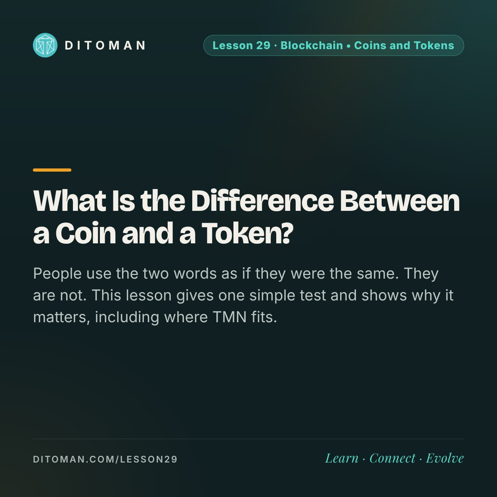

What Is the Difference Between a Coin and a Token?
ما الفرق بين العملة والرمز (توكن)؟
People use the two words as if they were the same. They are not. This lesson gives one simple test and shows why it matters, including where TMN fits.
يستخدم الناس الكلمتين كأنهما واحد، لكنهما ليستا واحدًا. يعطي هذا الدرس اختبارًا بسيطًا ويبيّن لماذا هو مهم، ومنه مكان TMN.
Lesson Content
محتوى الدرس
Read the lesson in English or Persian.
اقرأ الدرس بالفارسية أو الإنجليزية.
In a shop you can pay with the country's own banknotes, or with a voucher the shop itself issued. Both are called money in daily speech, but they live in different places.
Crypto has the same split, and the words are coin and token.
01. The one-line test
A coin is native to its own blockchain. A token is built on top of another blockchain. Kraken's guide gives the examples: BTC and ETH are coins; USDT and UNI are tokens.
Ask one question: does this asset have its own chain, or does it live on someone else's? That settles it.
| Coin | Token | |
|---|---|---|
| Where it lives | On its own blockchain | On another blockchain |
| Examples | BTC, ETH | USDT, UNI, TMN |
| Created by | The chain's own rules | A smart contract |
| Depends on | Its chain | Its chain and its contract |
02. Why coins exist
A coin is what the chain itself uses. It pays the fees and rewards the people who keep it running, as Lesson 27 showed. Without the coin the network would have no way to pay for its own operation.
03. How tokens are made
Tokens are made by smart contracts, the programs from Lesson 28. A developer writes a contract that keeps a list of balances and rules for moving them. No new blockchain is needed.
04. Why a standard helps
Ethereum has a standard for this called ERC-20, for fungible tokens, where one unit is interchangeable with another. The standard fixes the common names of the functions: name, symbol, decimals, total supply, balance of an address, transfer and approve, and two events that record transfers and approvals.
Because every compliant token speaks the same language, a wallet or an app that supports the standard can work with any of them without special code.
05. One warning from the standard
ethereum.org notes that a plain ERC-20 can lose tokens that are sent to a contract that does not know how to handle them. Tokens are not magic: sending to a wrong address is still a mistake you cannot undo.
06. Other chains, similar standards
Other chains have their own versions. BNB Smart Chain uses BEP-20, which follows the same idea. TMN, the digital toman, is a BEP-20 token on BNB Smart Chain, as described on its page on this site.
07. Why the difference matters to you
A coin depends on its chain's own security. A token depends on both its chain and its contract. Understanding what an asset sits on tells you what could go wrong, and who, if anyone, can change it.
The question is not which is better. It is knowing which one you hold.
What to take from this
A coin is native to its own blockchain; a token is built on another.
BTC and ETH are coins; USDT and UNI are tokens.
Tokens are created by smart contracts, with no new chain needed.
Standards such as ERC-20 and BEP-20 let wallets work with many tokens.
TMN is a BEP-20 token on BNB Smart Chain.
في متجر يمكنك الدفع بالأوراق النقدية لبلدك نفسه أو بقسيمة أصدرها المتجر نفسه. وفي الحديث اليومي يسمى كلاهما «مالًا»، لكنهما يعيشان في مكانين مختلفين.
وفي العملات المشفّرة التقسيم نفسه، وكلمتاه العملة (coin) والرمز (token).
01. اختبار بسطر واحد
العملة أصيلة في بلوكتشينها هي. والرمز يُبنى على بلوكتشين آخر. ويضرب دليل Kraken مثالًا: BTC وETH عملتان؛ وUSDT وUNI رمزان.
اسأل سؤالًا واحدًا: هل لهذا الأصل سلسلته الخاصة أم يعيش على سلسلة أخرى؟ وهذا يحدد الجواب.
| العملة | الرمز | |
|---|---|---|
| أين يعيش | على بلوكتشينها هي | على بلوكتشين آخر |
| أمثلة | BTC، ETH | USDT، UNI، TMN |
| مصنوعة بواسطة | قواعد السلسلة نفسها | عقد ذكي |
| تعتمد على | سلسلتها | السلسلة وعقدها هو |
02. لماذا توجد العملات
العملة هي ما تستخدمه السلسلة نفسها. تدفع الرسوم وتكافئ من يُبقون السلسلة تعمل، كما بيّن الدرس 27. وبلا عملة لن يكون للشبكة وسيلة لدفع تكلفة عملها.
03. كيف تُصنع الرموز
تصنع الرموزَ عقودٌ ذكية، وهي البرامج نفسها في الدرس 28. يكتب المطوّر عقدًا يحفظ قائمة أرصدة وقواعد انتقالها. ولا حاجة إلى بلوكتشين جديد.
04. لماذا يفيد المعيار
لدى إيثريوم معيار لهذا يسمى ERC-20، للرموز المتماثلة، حيث تكون كل وحدة قابلة للاستبدال بأخرى. ويثبّت المعيار أسماء الدوال المشتركة: الاسم والرمز وعدد الخانات العشرية والعرض الكلي ورصيد عنوان والتحويل والموافقة، وحدثين يسجلان التحويلات والموافقات.
ولأن كل رمز مطابق يتكلم اللغة نفسها، تستطيع محفظة أو برنامج يدعم المعيار العمل معها كلها دون شيفرة خاصة.
05. تحذير من المعيار نفسه
يذكّر ethereum.org بأن ERC-20 البسيط قد يفقد الرموز التي تُرسل إلى عقد لا يعرف كيف يتعامل معها. الرموز ليست سحرًا: الإرسال إلى عنوان خاطئ ما زال خطأً لا رجعة فيه.
06. سلاسل أخرى، معايير مشابهة
للسلاسل الأخرى نسختها الخاصة. تستخدم BNB Smart Chain معيار BEP-20 الذي يتبع الفكرة نفسها. وTMN، التومان الرقمي، رمز BEP-20 على BNB Smart Chain، كما ورد في صفحته في هذا الموقع نفسه.
07. لماذا يهمك هذا الفرق
العملة تعتمد على أمان سلسلتها. والرمز يعتمد على سلسلته وعلى عقده. ومعرفة ما يقوم عليه الأصل تبيّن ما الذي قد يسوء ومن، إن وُجد، يستطيع تغييره.
السؤال ليس أيهما أفضل. بل أن تعرف أيهما بين يديك.
ماذا نستنتج
العملة أصيلة في بلوكتشينها؛ والرمز يُبنى على بلوكتشين آخر.
BTC وETH عملتان؛ وUSDT وUNI رمزان.
الرموز تصنعها عقود ذكية، بلا سلسلة جديدة.
معايير مثل ERC-20 وBEP-20 تمكّن المحافظ من العمل مع رموز كثيرة.
TMN رمز BEP-20 على BNB Smart Chain.
Two lessons that connect
درسان مرتبطان
Lesson 28 explains the smart contracts that make tokens. Lesson 5 shows how to check any token before you touch it.
يشرح الدرس 28 العقود الذكية التي تصنع الرموز. ويبيّن الدرس 5 كيف تفحص أي رمز قبل أن تمسّه.
Key Concepts
المفاهيم الأساسية
- Coin
- Token
- Native asset
- ERC-20
- BEP-20
- Fungible
- Wallet compatibility
- العملة
- الرمز
- أصل أصيل
- ERC-20
- BEP-20
- متماثل
- التوافق مع المحفظة
Learning Objectives
أهداف التعلّم
- Apply the one-line test to any asset.
- Give two examples of coins and two of tokens.
- Explain how a token is created.
- Say why a standard such as ERC-20 helps.
- Place TMN correctly.
- طبّق اختبار السطر الواحد على أي أصل.
- اضرب مثالين على العملة ومثالين على الرمز.
- اشرح كيف يُصنع الرمز.
- قل لماذا يفيد معيار مثل ERC-20.
- ضع TMN في مكانه الصحيح.
Quiz
اختبار قصير
Check what stayed with you. The answer is under each question.
انظر ماذا علق في ذهنك. الإجابة تحت كل سؤال.
Question 1
السؤال 1
Which one is a coin?
أيٌّ منها عملة؟
A. ETH
أ. ETH
B. USDT
ب. USDT
C. UNI
ج. UNI
Correct answer: A
الإجابة الصحيحة: أ
Question 2
السؤال 2
What is the one-line test?
ما اختبار السطر الواحد؟
A. Does it have its own blockchain?
أ. هل له بلوكتشينه الخاص؟
B. Is its price high?
ب. هل سعره مرتفع؟
C. Is its name short?
ج. هل اسمه قصير؟
Correct answer: A
الإجابة الصحيحة: أ
Question 3
السؤال 3
What creates a token?
ما الذي يصنع الرمز؟
A. A smart contract
أ. عقد ذكي
B. A new mining rig
ب. جهاز تعدين جديد
C. A central bank
ج. بنك مركزي
Correct answer: A
الإجابة الصحيحة: أ
Question 4
السؤال 4
What does ERC-20 standardise?
ما الذي يوحّده ERC-20؟
A. The common functions of fungible tokens
أ. الدوال المشتركة للرموز المتماثلة
B. The price of tokens
ب. سعر الرموز
C. Block time
ج. زمن الكتلة
Correct answer: A
الإجابة الصحيحة: أ
Question 5
السؤال 5
TMN is a token of which standard and chain?
TMN رمز أي معيار وأي سلسلة؟
A. BEP-20 on BNB Smart Chain
أ. BEP-20 على BNB Smart Chain
B. A coin on Bitcoin
ب. عملة على البيتكوين
C. Its own blockchain
ج. بلوكتشين مستقل خاص به
Correct answer: A
الإجابة الصحيحة: أ
Sources
المصادر
- Kraken Learn: the difference between crypto coins and tokens (BTC and ETH are coins; USDT and UNI are tokens)
- ethereum.org: the ERC-20 token standard (shared interface, risk of tokens sent to contracts that cannot handle them)
TMN's standard and chain follow the token page on this site. General explanation, not investment advice.
معيار TMN وسلسلته مأخوذان من صفحة الرمز في هذا الموقع نفسه. شرح عام لا نصيحة استثمارية.
نتابع معًاFollow along
New lessons are announced first on Ditoman's channels.
تُعرَض الدروس الجديدة أولًا على قنوات ديتومان.